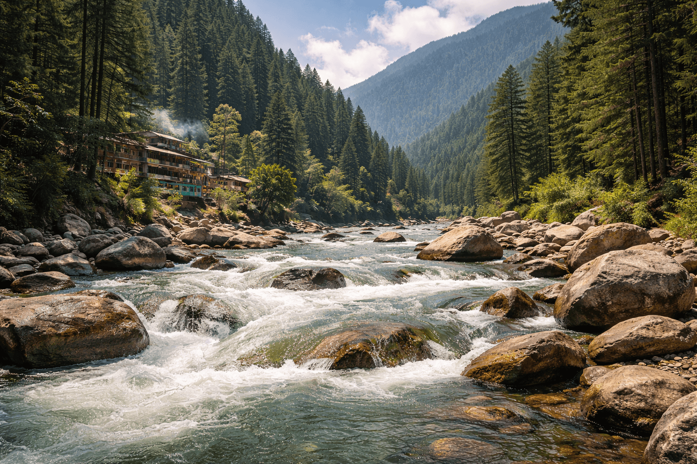
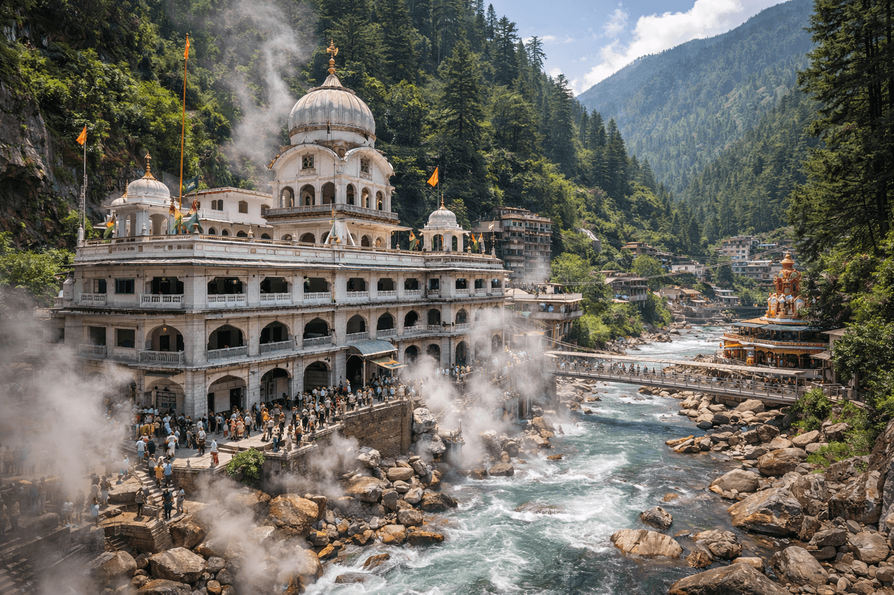
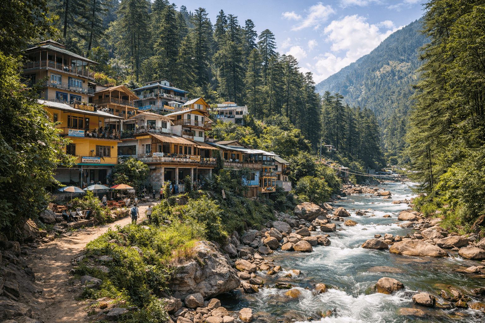
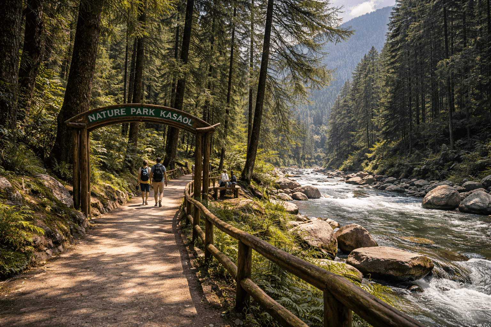
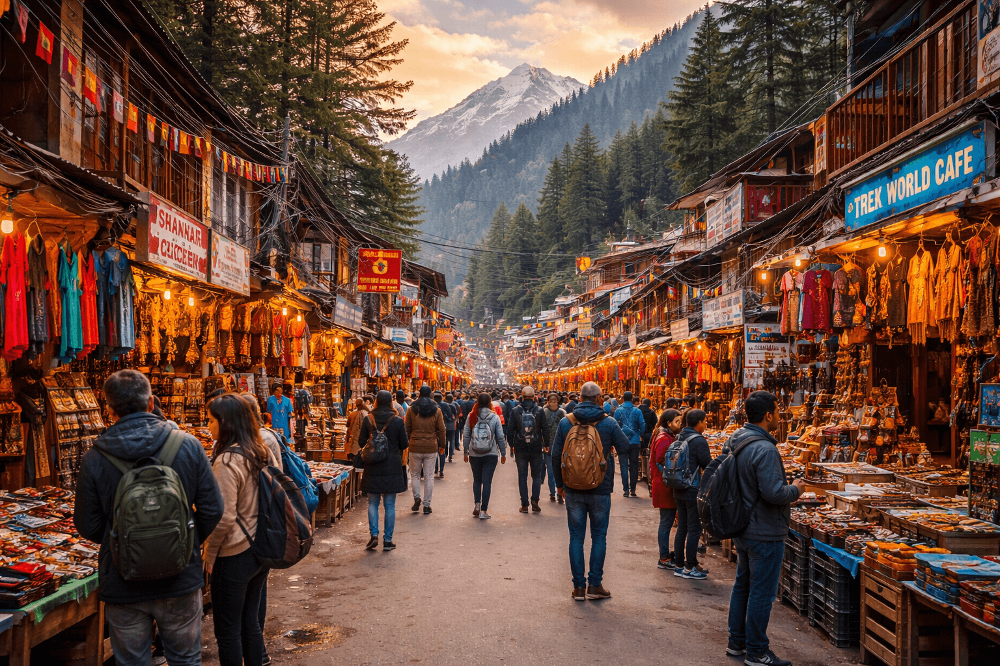
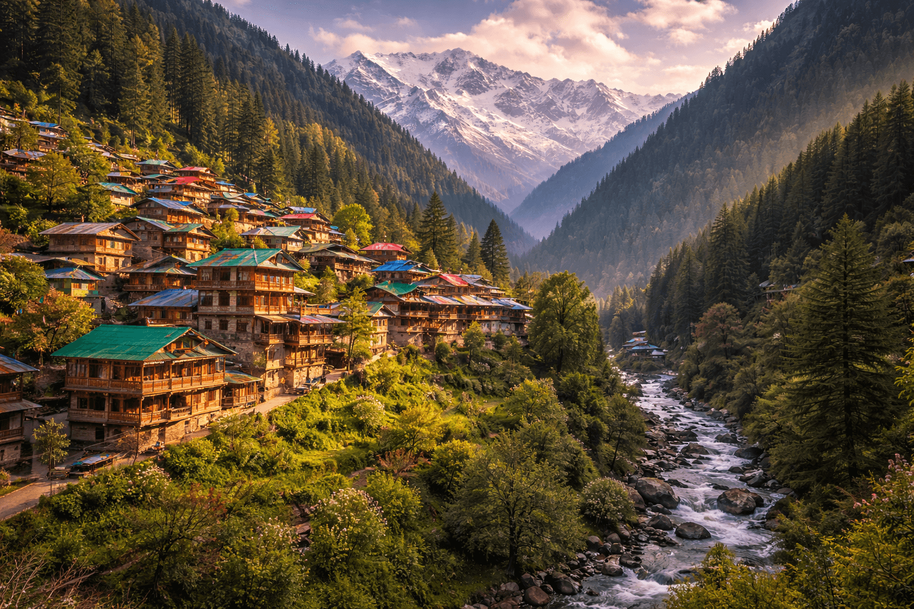
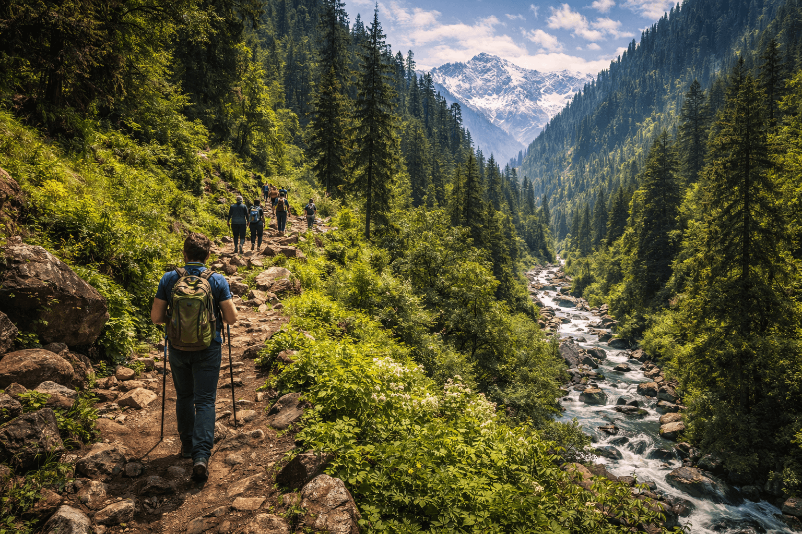
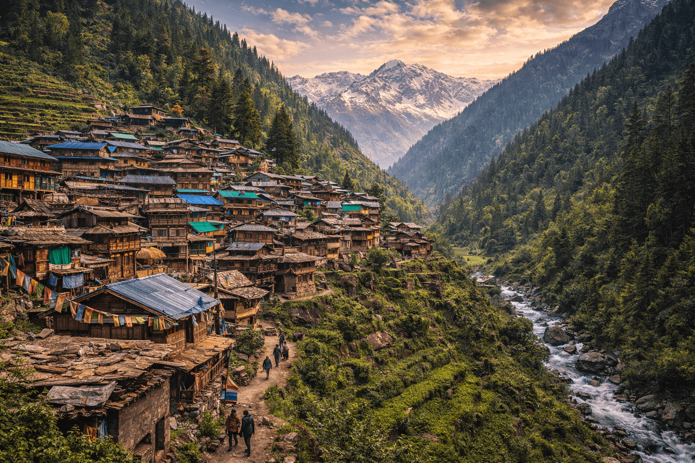
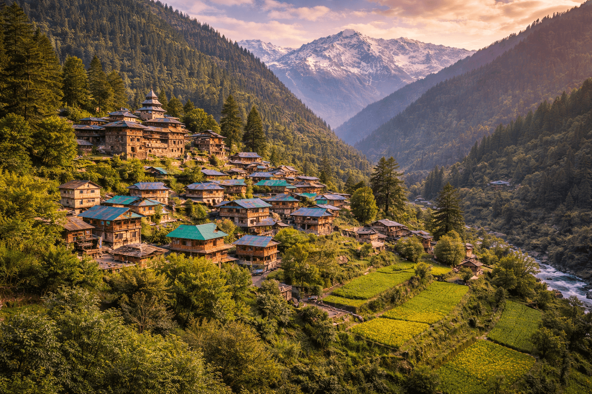

Complete Travel Route Planner with Day-wise Detailed Plans









Kasol Village Zone: Kasol Main Street, Parvati River Walk, cafés, Chalal Village.
Offbeat Villages: Tosh Village, Malana Village, Grahan Village, Pulga Village.
Trekking Zone: Kheerganga Trek, Rasol Village trails, hidden waterfalls.